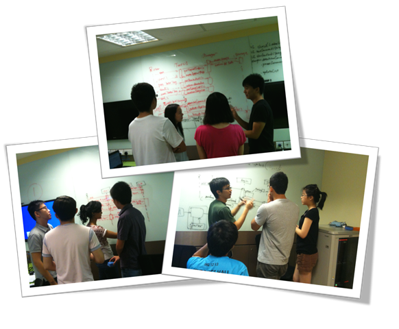
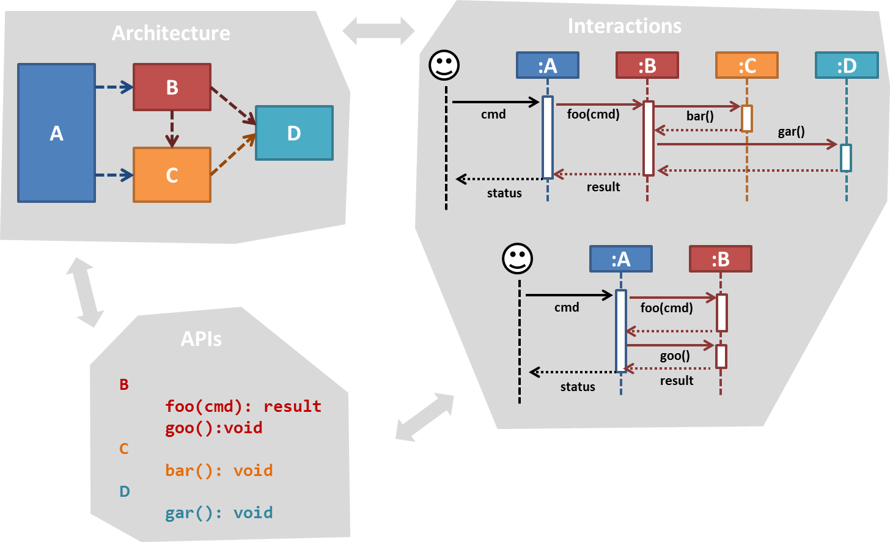
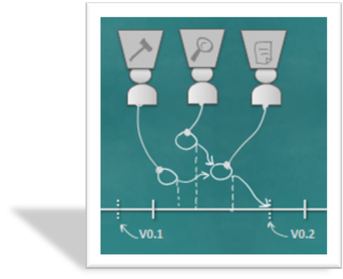
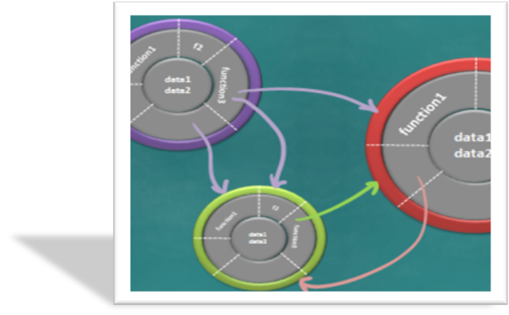

|  |  |
|  |
Overview: Working in a team requires project to be broken down to well-specified tasks of manageable size and scheduled in a way that minimize risk of overrunning milestone deadlines. Topics: work breakdown structures, scheduling and tracking, team structures |
Resources:
|  |
Slides Overview: During the detailed design, which can be complex, it is good to follow a common design paradigm. OO is the paradigm followed most widely in the industry. When using OO, we view a system as interacting objects. Objects represent entities in the real world and encapsulate data and operations related to those entities. Introduction to OO, Creating an OO solution, Object diagrams, Class diagrams |
Resources: